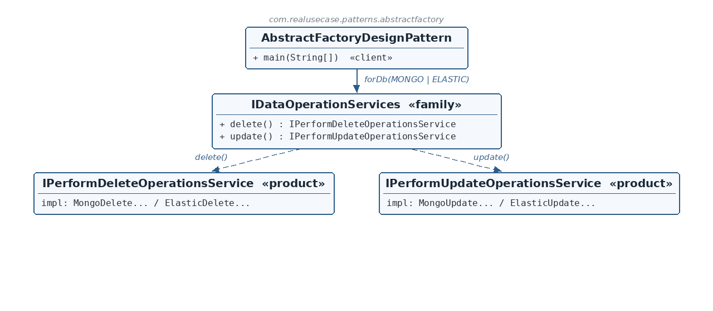

The abstract products
☕ 4 min read · 🎬 Video walkthrough · 📊 UML diagram · 💻 Runnable code
⚡ In a nutshell — Provide an interface for creating families of related objects without specifying their concrete classes.
Provide an interface for creating families of related objects without specifying their concrete classes. Where Factory Method defers the creation of one product, Abstract Factory hands the client a matched set — products that are guaranteed to belong together.
The rule of thumb: choosing a factory chooses a whole family. The client can never accidentally mix a product from one family with a product from another.
When an entity changes in a data platform, its references must be cleaned up in every store that indexes it — deleted in MongoDB and updated in Elasticsearch, each with engine-specific logic. The delete-service and update-service for one engine belong together: pairing Mongo's delete with Elastic's update would corrupt the cleanup. This module models the production fix: a factory that, given a DBType, returns a consistent family (delete() + update()) for that one engine, so mixed pairings become impossible by construction.
IPerformDeleteOperationsService and IPerformUpdateOperationsService are the two abstract products — the roles every family must supply.IDataOperationServices is the abstract factory: one accessor per product role (delete(), update()). One instance of it is one family.DataOperationServiceFactory is the factory provider: concrete services register per DBType, and forDb(type) returns an IDataOperationServices whose accessors always answer from that one type's registrations — a guaranteed-consistent family.
Reading the diagram: the client calls forDb(MONGO) or forDb(ELASTIC) and receives an IDataOperationServices — one family. From it, delete() and update() yield the two products of that family. Each product interface has one Mongo and one Elastic implementation; the client never names any of them.
IPerformDeleteOperationsService / IPerformUpdateOperationsService — Abstract products — the two roles in every family.MongoDeleteOperationService, MongoUpdateOperationService — The Mongo family's concrete products.ElasticDeleteOperationService, ElasticUpdateOperationService — The Elastic family's concrete products.IDataOperationServices — The abstract factory — one instance = one consistent family.DataOperationServiceFactory — Provider — registers products per DBType, mints family instances via forDb.DataOperationModel — The payload the products operate on (entityId).AbstractFactoryDesignPattern — Client — wires registrations, then uses families abstractly.public interface IPerformDeleteOperationsService {
void performDeleteOperations(DataOperationModel dataOperationModel);
}
public interface IPerformUpdateOperationsService {
void performUpdateOperations(DataOperationModel dataOperationModel);
}
public class MongoDeleteOperationService implements IPerformDeleteOperationsService {
@Override public void performDeleteOperations(DataOperationModel m) {
System.out.println("mongo: deleting references of " + m.getEntityId());
}
}
MongoUpdateOperationService and the two Elastic classes are identical in shape.IDataOperationServices — the abstract factorypublic interface IDataOperationServices {
IPerformDeleteOperationsService delete();
IPerformUpdateOperationsService update();
}
DataOperationServiceFactory — the providerprivate final Map<DBType, IPerformDeleteOperationsService> deleteServices = new EnumMap<>(DBType.class);
private final Map<DBType, IPerformUpdateOperationsService> updateServices = new EnumMap<>(DBType.class);
public void register(DBType dbType, IPerformDeleteOperationsService deleteService,
IPerformUpdateOperationsService updateService) {
deleteServices.put(dbType, deleteService);
updateServices.put(dbType, updateService);
}
public IDataOperationServices forDb(final DBType dbType) {
return new IDataOperationServices() {
@Override public IPerformDeleteOperationsService delete() { return deleteServices.get(dbType); }
@Override public IPerformUpdateOperationsService update() { return updateServices.get(dbType); }
};
}
register forces both products of a family to be supplied together, in one call — you physically cannot register half a family.forDb returns an anonymous IDataOperationServices closed over the requested dbType. Both accessors answer from the same type's registrations, so the family is consistent by construction. EnumMap gives fast, type-safe lookups keyed by the enum.factory.register(DBType.MONGO, new MongoDeleteOperationService(), new MongoUpdateOperationService());
factory.register(DBType.ELASTIC, new ElasticDeleteOperationService(), new ElasticUpdateOperationService());
IDataOperationServices mongo = factory.forDb(DBType.MONGO);
mongo.delete().performDeleteOperations(model);
mongo.update().performUpdateOperations(model);
IDataOperationServices: grab the Mongo family, run its delete and update; grab the Elastic family, same calls, different behavior.EnumMap instead of a switch? New engines plug in at the composition root without editing the factory — and the compiler (via the enum) knows every legal DBType.delete() and update() that belong together.$ java -cp target/classes com.realusecase.patterns.AbstractFactoryDesignPattern
mongo: deleting references of e1
mongo: updating references of e1
elastic: deleting references of e1
elastic: updating references of e1
Choose the factory, and you've chosen the whole family — no mixing, by construction.
👏 Found this useful? Give it a few claps so more developers discover it, and follow for the whole series — every article ships with a UML diagram, runnable code, a narrated video, and a companion PDF. Happy building! 🚀